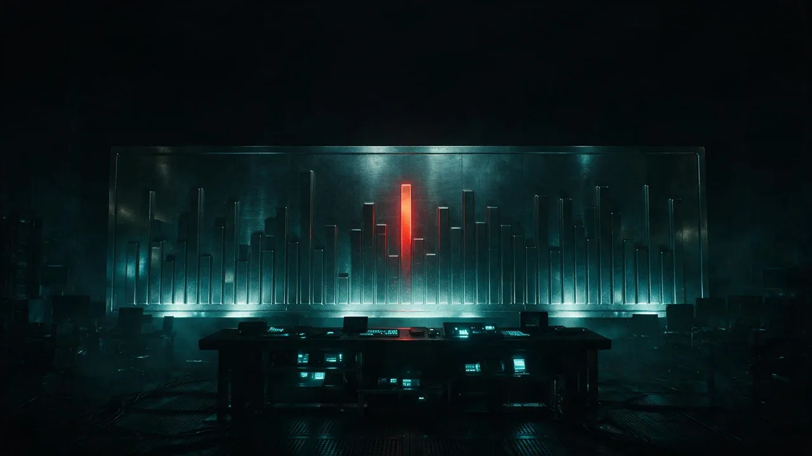

El país completo, delito por delito, sin categorías que escondan
Auditamos las cinco fuentes oficiales (SESNSP, RNPDNO, ENVIPE, CONAPO, INEGI) con el catálogo completo de 55 delitos y su serie 2015-2025, estado por estado. Incluidas las categorías “Otros…”, donde la reclasificación se esconde. Cada cifra es trazable a su archivo fuente.
¿Bajó la violencia en México en 2025? En 2025 México registró 20,191 homicidios dolosos, 20.7% menos que en 2024, y 2,016,724 carpetas de investigación del fuero común (SESNSP). Las personas desaparecidas activas suman 133,924 y no descienden (RNPDNO, junio 2026). En 22 series el delito específico cae mientras su categoría espejo “Otros…” sube.
Mapa municipal · 2,475 municipios, sin esconder
Las últimas columnas
Ver todasEl cobro no tiene partido
Hay nueve estados donde Morena nunca ha gobernado y en los nueve ocurrió lo mismo que en el resto del país: bajaron los muertos y subió el cobro. De los 23 estados morenistas pasaron por ese patrón 19; de los 9 que nunca lo han tenido, pasaron los 9. En 11 de esos 19 el patrón ya estaba antes de la alternancia, y los dos primeros del país fueron Coahuila y Durango, ambos priistas. Medido por magnitud el resultado se sostiene: la extorsión creció una mediana de 29 por ciento donde nunca ha gobernado Morena y cayó 4 por ciento donde sí. El punto más bajo de la serie es septiembre de 2018, tres meses antes de que tomara posesión el gobierno al que suele atribuirse el fenómeno.
Leer la columna →La paz que se cobra
De los 2,475 municipios del país, el que más extorsión registra por habitante es Cuautla: 133.6 carpetas por cada cien mil, más del doble que el segundo lugar nacional. Morelos encabeza la tabla estatal de extorsión y es segundo en homicidio. Entre 2023 y 2025 la ciudad cruzó de plaza en disputa a otra cosa: los homicidios cayeron 45.1 por ciento mientras el cobro subió 185.1. Y no es solo Cuautla: de los once municipios de Morelos que el radar alcanza a medir, nueve caen hoy en el mismo cuadrante. El radar de la paz narca, indicador propio de 45 Digital Noticias, encuentra ese patrón en 18 de los 32 estados y en 163 de 315 municipios.
Leer la columna →El país que no se cuenta
Esta mañana, desde la conferencia matutina, la presidenta Claudia Sheinbaum presumió que el homicidio doloso cayó 51 por ciento en 22 meses. La baja es real, y el INEGI la confirma con actas de defunción. Pero la cifra es un acertijo: el homicidio es apenas el 1 por ciento de todos los delitos del país, y el total no bajó, subió 21.7 por ciento en la década y lleva plano desde 2018. El delito se recompuso, cayó el robo en la calle y se dispararon la violencia familiar, más 109 por ciento, y los delitos sexuales. Y la forma de la baja delata su origen, el homicidio cede mientras la extorsión y el narcomenudeo suben, la huella de un crimen que se consolidó y no de un Estado que pacificó, según Gambetta, Trejo y Ley, y Durán-Martínez. Todo esto ocurre sobre el 6 por ciento de la realidad, porque el INEGI estima 33.5 millones de delitos al año, de los que el 93 por ciento nunca se denuncia. Con la ley de Goodhart, que popularizó Marilyn Strathern: cuando una medida se convierte en objetivo, deja de ser una buena medida.
Leer la columna →
El semestre que subió
En la mañanera del 24 de julio, desde Cuernavaca, el gabinete de seguridad presentó una fila de delitos de Morelos a la baja. Fuimos a la misma fuente oficial que ellos citan, el SESNSP con corte a junio, y lo que dejaron fuera de cuadro cuenta otra historia: la delincuencia total del semestre no bajó, subió 7.3 por ciento; la extorsión se duplicó en un año, más 112.8 por ciento, y la narraron como más confianza para denunciar; el homicidio sí bajó, pero todo el 54 por ciento cuelga de dos meses recientes y aún preliminares, mayo y junio, en pleno Mundial, mientras abril, cuando arranca su Plan Morelos, fue un pico; y el feminicidio bajó como etiqueta, no como cuerpos, porque las mujeres asesinadas siguen planas y solo una de cada cuatro se clasifica como feminicidio. Con el concepto de Darrell Huff, How to Lie with Statistics: para engañar con una estadística no hace falta falsear un número, basta escoger cuál se muestra, contra qué base y en qué formato.
Leer la columna →El arresto y la marea
La presidenta presume que, gracias a la detención del alcalde de Cuautla, los homicidios de Morelos bajaron de 3.7 a 1.9 al día. Pero la causa no cuadra: Cuautla aporta cerca del 10% de los homicidios del estado, al alcalde lo acusan de extorsión y delincuencia organizada, no de homicidios, la extorsión de Cuautla sigue subiendo, y el 1.9 es de junio, el mes del Mundial. Con el concepto de regresión a la media de Daniel Kahneman: tras un pico extraordinario, la cifra vuelve sola hacia el promedio, y el error clásico es atribuir ese regreso a la intervención que llegó en medio.
Leer la columna →La paz prestada del Mundial
El gobierno presume que el homicidio doloso cayó 48%, pero cerró la cuenta en junio, el mes del Mundial. Con las sedes tomadas por la Guardia Nacional, la violencia sí cedió esas semanas: junio fue el mes menos violento del año, con una baja de 33.5% frente a junio de 2025. El problema es que fue un operativo, no una estrategia, y los operativos intensivos bajan el delito mientras duran y luego se desvanecen. Medida año contra año, la caída real ronda 21%, no 48%. El 48% junta dos extremos convenientes: el pico de septiembre de 2024 y el piso prestado del torneo. Con el concepto de disuasión residual de los crackdowns de Lawrence Sherman.
Leer la columna →Sigue el hilo
Todo el sitio, sin salir de aquíHay territorios donde los muertos bajan de verdad y lo que sube es el cobro. Eso no describe a un Estado que ganó, sino a un mercado que dejó de pelearse.
Abrir Indicador propioSeñales del espejo22 delitos que caen mientras su categoría Otros sube en el mismo periodo y el mismo estado. Cada señal con su serie completa, para que el lector audite.
Abrir Indicador propioEl país que no se cuentaEl SESNSP publica dos conteos oficiales del mismo hecho y entre ellos hay 22,415 personas de diferencia. Más el catálogo con sus bolsas.
Abrir Escala nacionalEl país, de mayor a menorLos 32 estados y los municipios que encabezan, para el delito y el año que elijas, con su tasa por 100 mil habitantes.
Abrir Escala estatalAudita tu estadoLos 55 delitos completos de una entidad, su serie desde 2015, sus señales propias de reclasificación y el panel de personas desaparecidas.
Abrir Escala municipalEncuentra tu municipioLos 2,475 municipios del país, buscables por nombre, cada uno comparado contra su estado y contra el promedio nacional.
Abrir ExpedienteCorredores ferroviariosIstmo y Tren Maya. Qué pasa con el delito a lo largo de la vía, kilómetro por kilómetro, antes y después de la obra.
Abrir ExpedienteMorelos, a detalleLos cinco datos duros de la seguridad en el estado, con su serie mensual y el cruce contra lo que declara el gabinete.
Abrir ArchivoTodos los expedientesLas investigaciones abiertas de 45 Digital Noticias, cada una con su corte de datos y sus fuentes a la vista.
Abrir